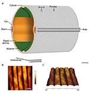

The Cuticle
Figures

CutFIG 1 - The structure of adult
cuticle
CutFIG 2 - SEMs of adults
showing sensory sensilla on cuticle surface
CutFIG 3 - Schematic showing
layers of adult cuticle
CutFIG 4 - Adult cuticle layers with
different EM modalities

CutFIG 5 - Localization of proteins
in adult cuticle
CutFIG 6 - Cuticle layer
organization in larval stages
CutFIG 7A - Cuticular structures of
the pharynx

CutFIG 7B-E - Ultrastructure of
pharynx cuticle elements
CutFIG 8 - Ultrastructure of
excretory canal cuticle lining
CutFIG 9A - Schematic of cuticle
formation and molting
CutFIG 9B - TEM of cuticle
formation and molting
CutFIG 10 - Ultrastructure of
cuticle attachment complexes
CutFIG 11 - Proteins associated
with cuticle attachment
complexes
CutFIG 12 - Cuticle structure of
mutant animals
CutFIG 13 - Cuticle defects in an
eff-1 mutant